Crate turns your Spotify or Apple Music library into a room full of records you actually own: flip through them, ask for a playlist in plain words, make mixtapes, and see every play you've ever made.
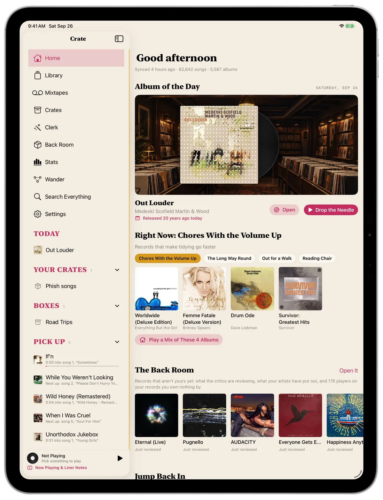
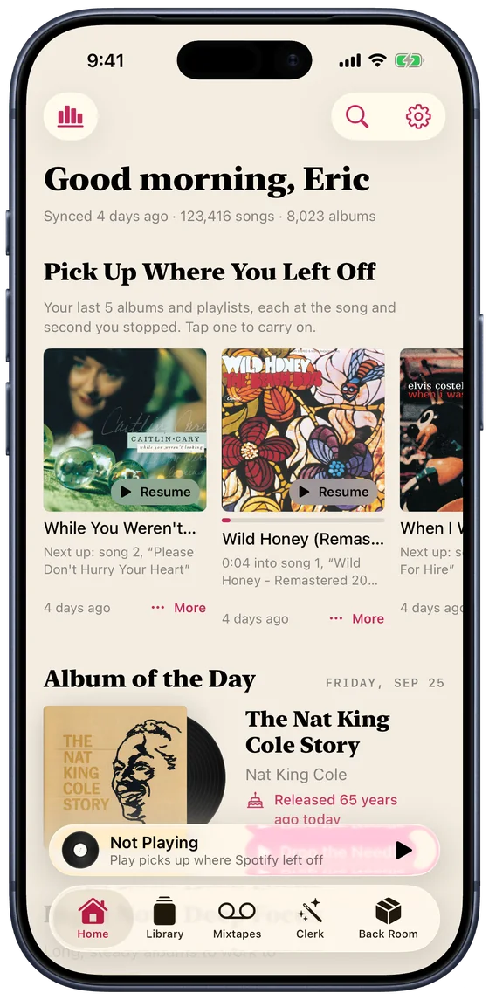
Type it the way you'd say it to a friend who knows your records. Apple Intelligence reads it, and the Clerk builds the list from songs you already have, never from a stranger's chart.
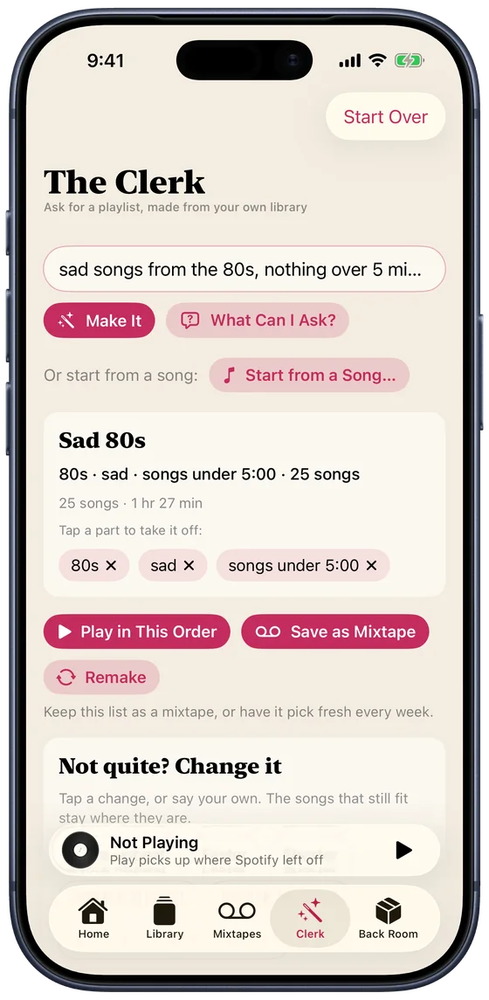
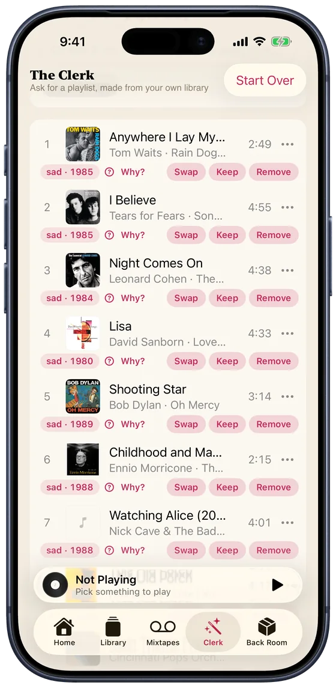
Set the rules once, like "added in the last month" or "the '90s and not played lately", and the tape changes as your library does. Describe one in a sentence and Apple Intelligence writes the rules for you to check.
Every tape gets a painted cover and a label in your hand. Pick a length from a C46 to a C120 and it splits into Side A and Side B, with a printed insert of liner notes. Crate can also write it into Spotify as an ordinary playlist, so it follows you to the car.
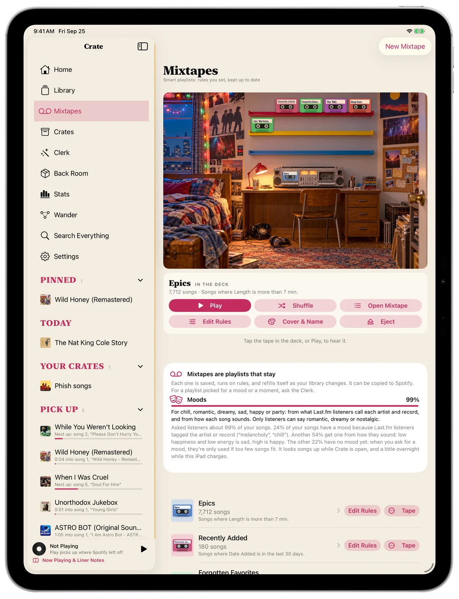
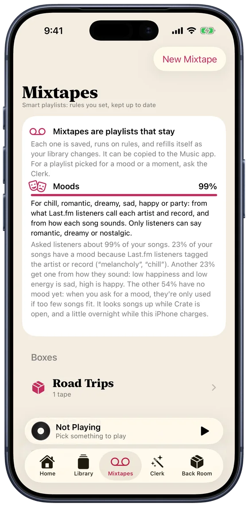
Open an artist and their records are laid out the way a collector thinks: Albums, Live, Compilations, Soundtracks, Singles & EPs. The ones you have wear a ribbon. The rest are one tap from your library.
"You have 30 of their 54 studio albums." Crate checks MusicBrainz so a live album isn't filed as a studio one, and a soundtrack with one of their songs on it isn't counted as theirs.
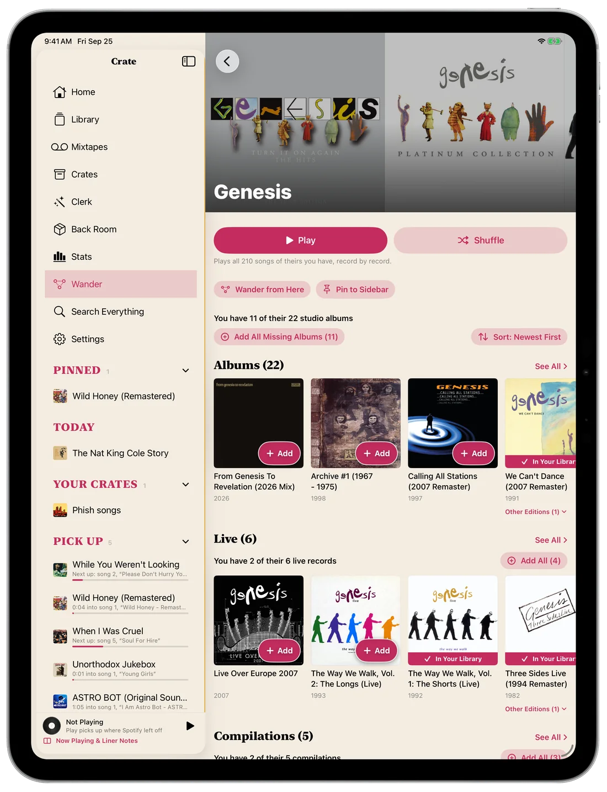
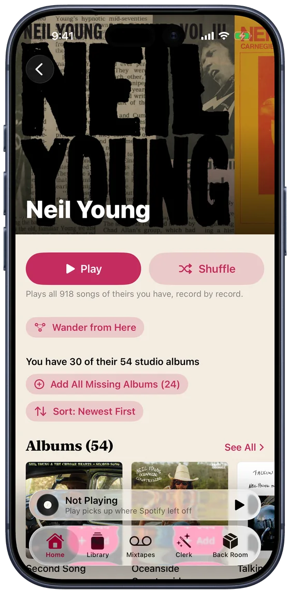
Wander lays artists out in a rack of records. Pull one out to hear it, keep it for a crate, or wander on from there to the next. Any artist works, whether you own them or not.
The Back Room is next door: new records from artists you already have, what's being reviewed this week, and the sidemen who played on your favourites.
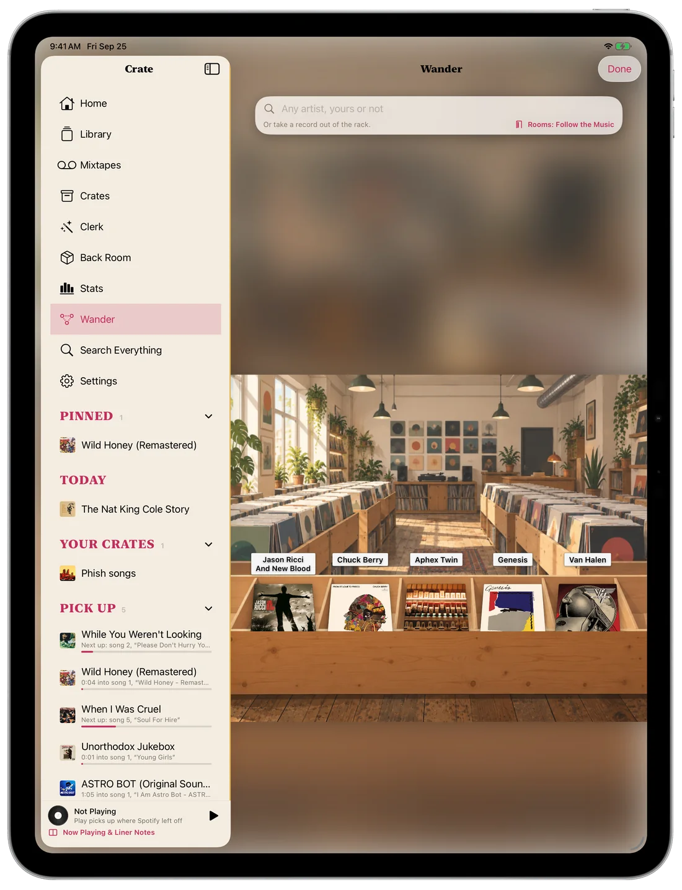
Put a record on the stand and play it. Browse by reviews, by new releases from artists in your library, by more from the ones you love, or by the people who played on them.
Here it is on a 13-inch iPad in landscape, in each of Crate's seven looks. Flip through them like records in a crate: tap a tab, the front card, or use the arrow keys.
Stats shows what you really have and how you really listen. Open a year, then a month, then a day, and see each song you played and when. It updates as each song ends.
A real library, as the screenshots show it. Spotify only shares your last 50 plays, so Crate keeps each one as it goes, and Last.fm can fill in everything before.
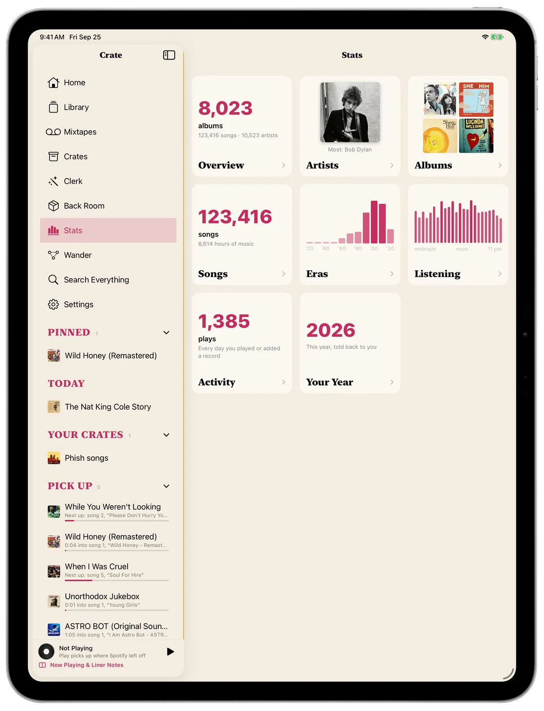
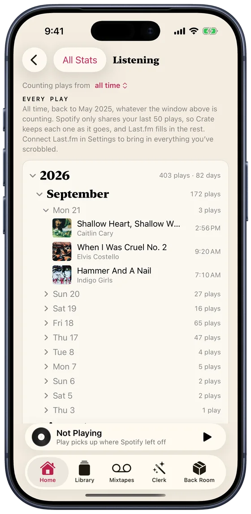
Each look has its own colours and its own typeface, checked for contrast in light and dark. Or let Crate change look every day.
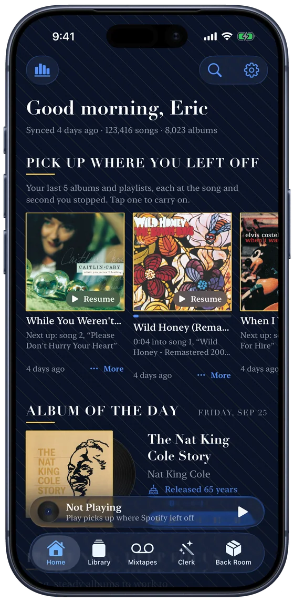
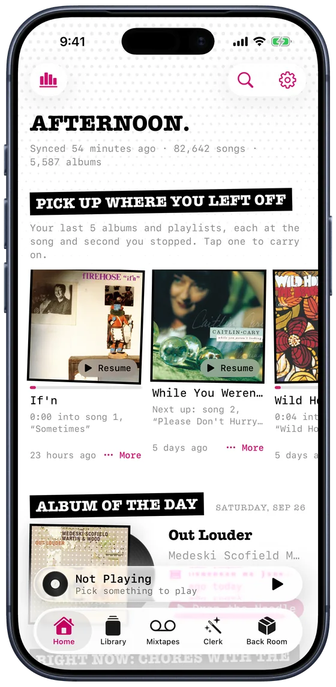
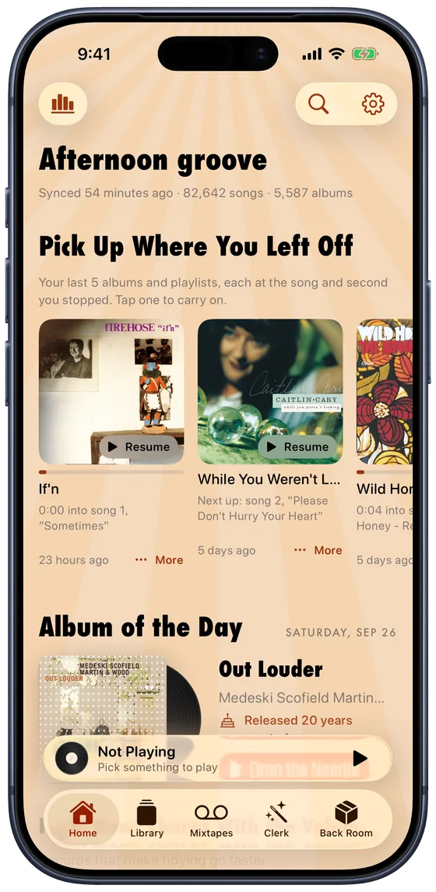
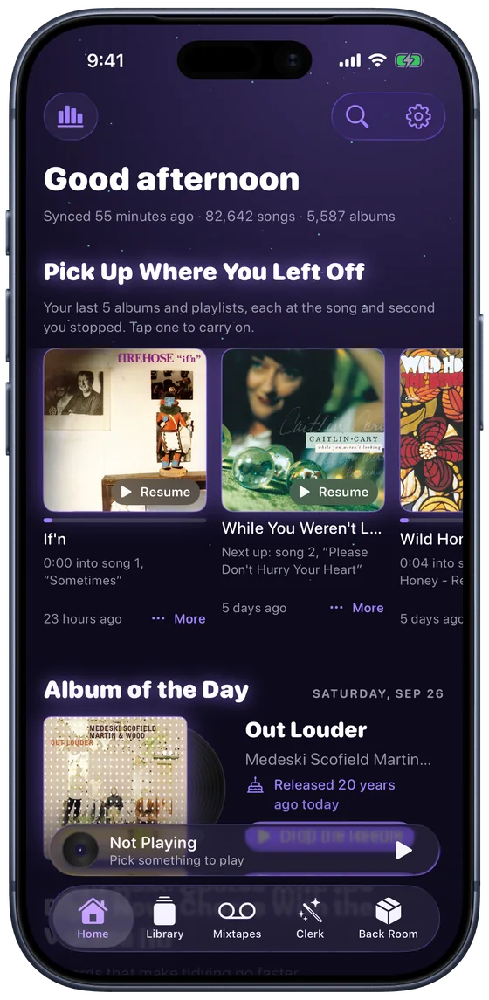
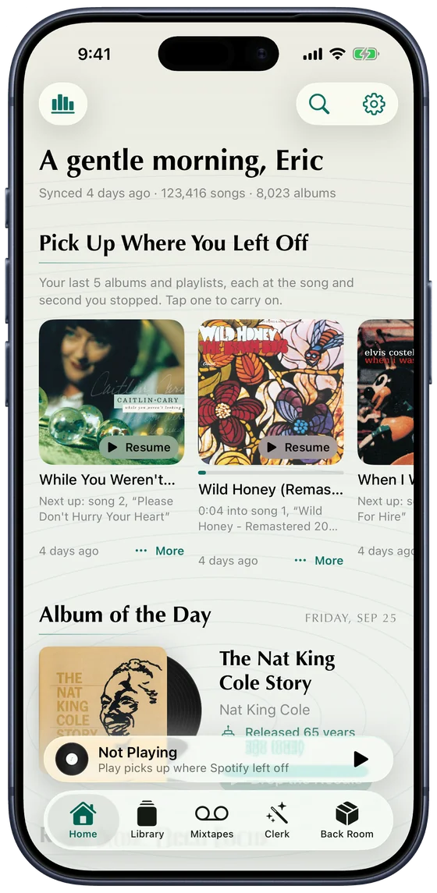
Everything here works in both. Pick yours in Settings.
Requests are read on your device, or on Apple's Private Cloud Compute for the harder ones. No account, no server of ours.
Your crates, pins and mixtapes follow you through iCloud. Say "Ask the Clerk" to Siri from anywhere.